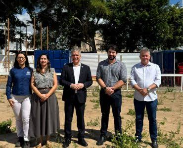
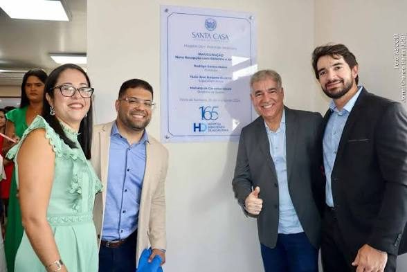
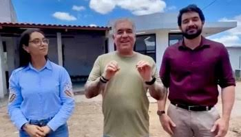
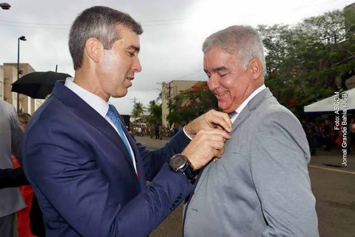
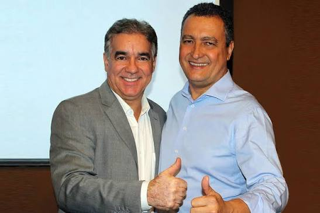

Atividades em Destaque





Galeria de Vídeos
A Voz da População
Maria Silva
"Muito orgulho do trabalho feito pela saúde da nossa cidade!"
Carlos Andrade
"Sempre presente nos bairros escutando as nossas reais necessidades."
Ana Souza
"As emendas destinadas mudaram a realidade da nossa escola local."
Redes Sociais
Nosso Escritório
Rua Domingos Barbosa de Araújo, 363, Centro - Feira de Santana - BA